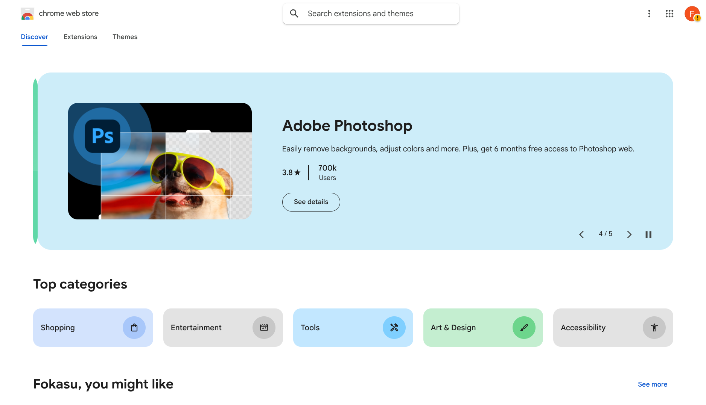
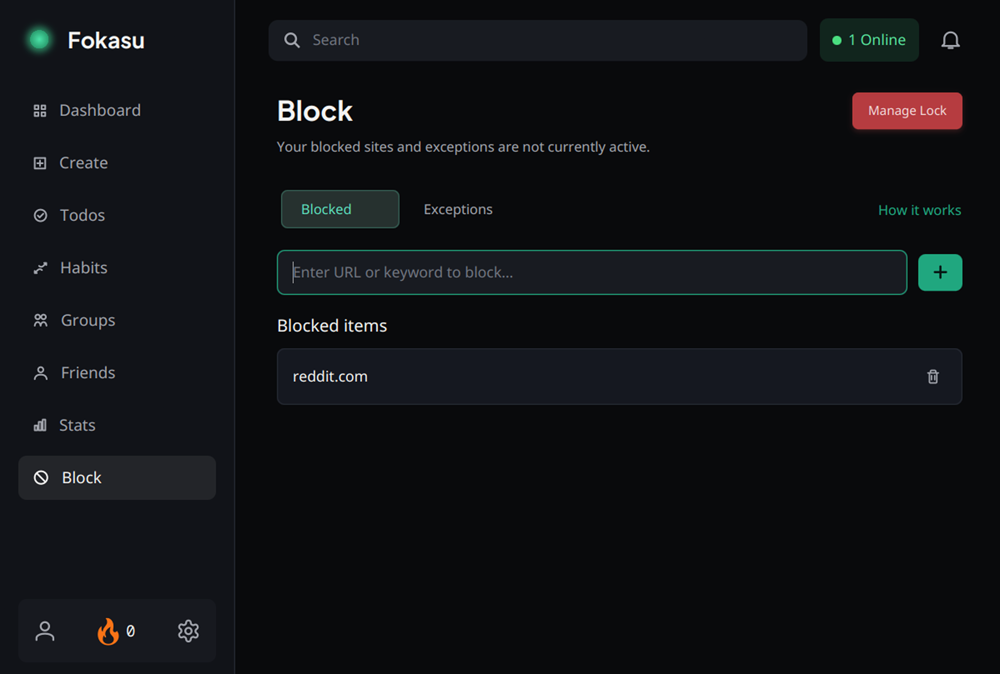
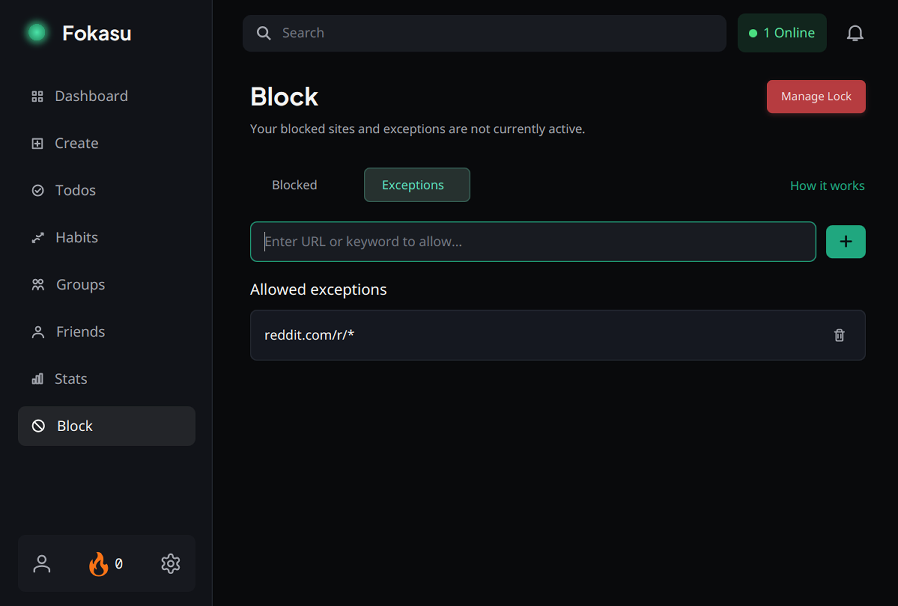
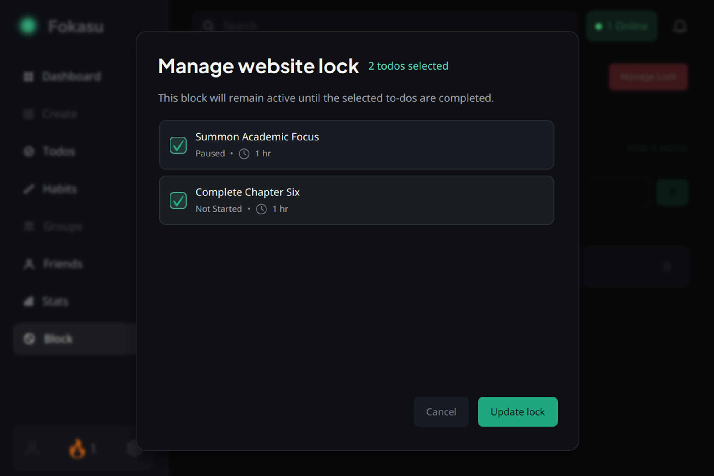
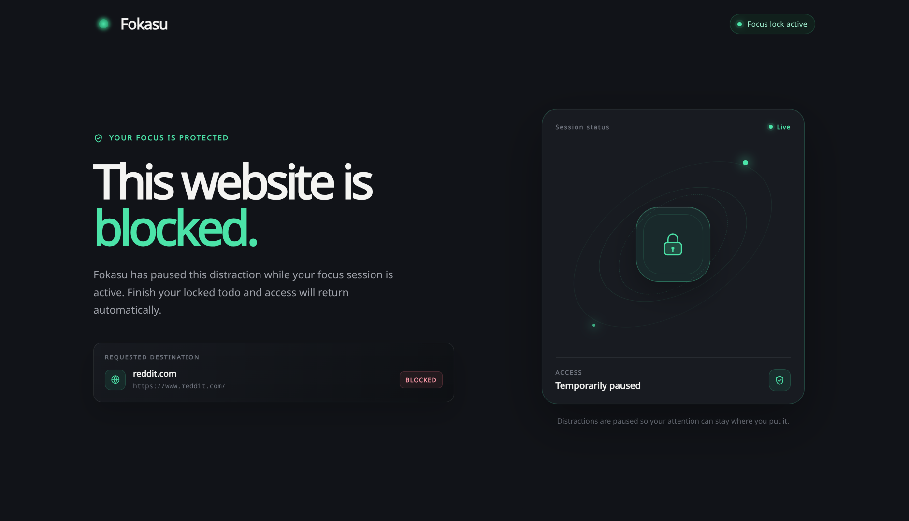

How Block Works
Setup
Install the extension first.
Then activate it in incognito or private mode.

Block list
Add the sites you want blocked.
For example, reddit.com means Reddit is blocked.

Exceptions
Keep narrow paths open.
For example, reddit.com/r/* can stay unlocked.

Lock
Choose today's todos, then enable the lock.
Use the dashboard lock or sidebar > Block > Manage Block. Only today's todos are selectable.

Blocked
Blocked sites stay blocked.
If the extension is disabled or removed, the browser shuts down after the grace period.


Shutdown
If the extension is disabled, the browser closes.
After the grace period, the app shuts the browser down.